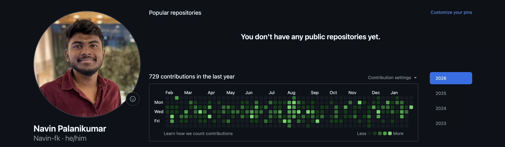

Backend Software Engineer II at FourKites — building distributed systems, AI agents, and MCP servers that turn complex workflows into autonomous pipelines. From $129K Kafka cost savings to a production MCP server that closes Salesforce cases in 5 minutes with zero human touch, I ship things that matter.
I'm a Backend Software Engineer II at FourKites with expertise in Java, Spring Boot, Python, AWS, Azure, and Kubernetes — and an increasingly deep focus on AI engineering. I build production-grade systems that scale, and I've recently expanded into building MCP servers, LangGraph agents, and Claude-powered automation tools that eliminate manual toil at the root.
I designed and deployed the OIS RCA MCP Server — a FastMCP + FastAPI service with Neo4j code-graph traversal and Claude Sonnet 4.5 via AWS Bedrock — that autonomously investigates Salesforce cases in ~5 minutes with zero engineer involvement. Beyond AI, I've led the Kafka platform migration saving $129K annually, built an end-to-end Quick Export pipeline handling 50K orders, and won the OIS Automation Hackathon 2025. I was promoted to SE II in recognition of owning complex, cross-cutting platform initiatives end to end.
Sri Krishna College Of Engineering And Technology, Coimbatore
Increased test coverage from 19% → 78%, built production-ready E2E automation framework with Playwright
Led Kafka migration from Cloudera to Confluent achieving 61% cost reduction with zero downtime
Established Azure Order Visibility platform from scratch to 7 production services, supporting $500K+ enterprise customer deal
Reduced POC setup time by 70% (2-3 days → 2-3 hours) through self-service bulk upload framework
@Navin-fk

DATABASECHANGELOGLOCK contention, guarantees safe startup order.
Production-grade MCP server integrated into Agent Cassie — a case number triggers fully autonomous ClickHouse log queries, Neo4j code-graph RCA, and Salesforce closure. Zero human involvement from start to finish.
ContextVar auth — no global state leakage across concurrent sessions02747571 closed in 313 seconds, 36 agent turns, zero humansEnd-to-end distributed batch pipeline enabling users to export up to 50,000 orders as Excel in minutes — spanning Elasticsearch, PostgreSQL, Redis, S3/Kafka/SQS, and a React frontend gated by Split.io.
(company_id, order_id) on 74M-row table — batch query from 14–16s to sub-secondXSSFWorkbook (in-memory) over SXSSFWorkbook — avoids tmpdir failures on K8s read-only root FS@ConditionalOnProperty(matchIfMissing=false) prevents cross-cloud bean loadingOwned and executed complete Kafka platform migration covering 10 critical production services and 60+ topics with zero downtime, zero data loss, and zero customer impact — saving $129K annually.
Dedicated ois-liquibase-service Spring Boot module owning all 278 DB migrations, deployed as a Kubernetes Init Container — guaranteeing migrations finish before any pod starts and eliminating DATABASECHANGELOGLOCK contention.
spring.liquibase.enabled=falseEngineered an MCP Server using Claude Desktop that transformed demo scenario setup from a 2-day manual process into an automated workflow completing in under a minute — 2880× faster.
Led the production security upgrade of Elasticsearch TLS from deprecated v1.0 to v1.2 with zero downtime and zero service disruption across all connected services.
Delivered Order, Delivery, and Inventory Mass Upload with CSV-based bulk uploads, field/date validation, async processing, progress tracking, and row-level error reporting — enabling self-service for implementation teams.
Built an AI-powered commit workflow using Claude to standardize commit messages, improve developer productivity, and enhance code traceability through intelligent change analysis.
Architected and executed enterprise-scale ES migration using a double-write single-read pattern, migrating 10TB+ production data while maintaining real-time search for 1M+ daily queries — zero downtime.
"Navin's work on optimizing our API performance was exceptional. The 40% improvement in response times directly impacted our user experience and system scalability."
"His expertise in Kafka-based event streaming and microservices architecture helped us build a robust, scalable system that handles our growing data needs efficiently."
"Navin's dedication to quality is remarkable. His rigorous testing approach and debugging skills resulted in a 30% reduction in production bugs during his internship."
Expert in designing and implementing high-throughput Kafka streaming systems with custom partitioning strategies and schema evolution
Specialized in building enterprise-grade Azure infrastructure with AKS, Service Bus, and comprehensive monitoring solutions
Proven expertise in large-scale data migrations using innovative double-write single-read patterns with full consistency guarantees
Specialized in designing auto-scaling systems with custom metrics, load balancing, and performance optimization for high-traffic applications
Proficient in designing and deploying scalable cloud solutions using AWS services including serverless architectures and managed database services
Deep dive into requirements and existing system architecture to identify root causes and optimization opportunities
Create scalable solutions with proper documentation, considering performance, security, and maintainability
Write clean, efficient code with comprehensive unit and integration tests to ensure reliability
Continuously monitor system performance and optimize based on real-world usage patterns
I'm always interested in discussing new opportunities, innovative projects, or just having a conversation about backend engineering and technology.